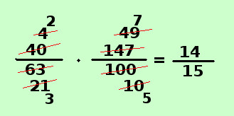

Applicazione al prodotto fra numeri razionali
quando fai il prodotto fra numeri razionali, se le frazioni hanno termini complicati, conviene prima di eseguire il prodotto semplificare, utilizzando i criteri di scomposizione, il primo numeratore per il secondo denominatore ed il primo denominatore per il secondo numeratore e moltiplicare successivamente le frazioni risultanti
Vediamo qui direttamente un esempio su come procedere:
Esempio
40

63 |
· |
147
100 |
= |
Supponendo di avere le frazioni gia' ridotte a forma normale devo vedere se hanno fattori comuni il primo numeratore con il secondo denominatore ed il primo denominatore con il secondo numeratore (brevemente si dice in croce)

- Devo semplificare 40 con 100
sono entrambe semplificabili per 10, quindi ottengo 4 e 10
Questi due numeri sono ancora divisibili per 2 quindi ottengo 2 e 5
- devo semplificare 63 e 147
sono entrambe semplificabili per 3 quindi ottengo 21 e 49
Questi due numeri sono divisibili per 7 (ripassa le tabelline!) quindi ottengo 3 e 7
40
63 |
· |
147
100 |
= |
4
21 |
· |
49
10 |
= |
2
3 |
· |
7
5 |
= |
14
15 |
Naturalmente quanto fatto e' il procedimento per esteso: nei compiti in classe questi calcoli si fanno a parte su un angolo di foglio e scrivendo sopra e sotto in sequenza, come vedi dall'immagine qui sopra a fianco.
|